Catalog
Easier to harder. Bodyweight first; gear is marked on the card.
ab-deadbug Dead bug
transversemid-abs
hip-flexorserectors
On back, knees 90°, arms up. Press the low back into the floor. Opposite arm and leg reach long, then return. Brace stays the whole time.
Faults: back arches as the leg lowers. Same-side arm and leg. Rushing.
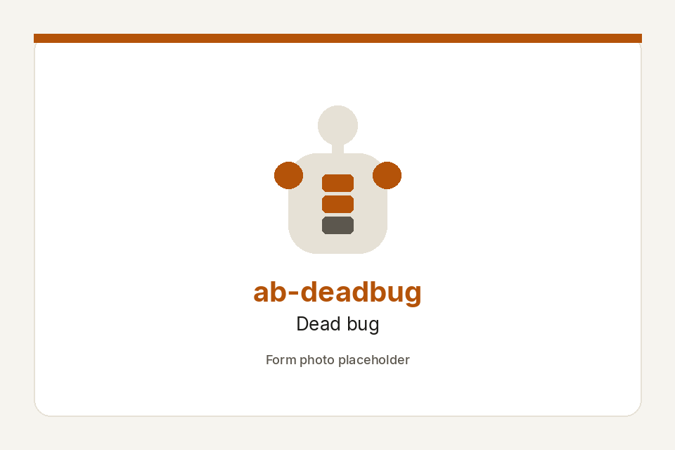
ab-birddog Bird dog
transverseobliques
gluteserectors
Hands under shoulders, knees under hips. Brace. Opposite arm and leg reach without the hips twisting. Pause, return.
Faults: hips swivel. Lumbar sag. Arm reaches so high the ribs flare.
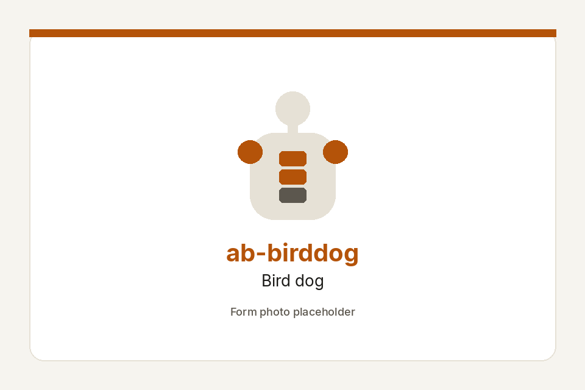
ab-plank Front plank
transversemid-abs
obliquesglutes
Elbows or hands under shoulders. Ribs down, glutes on, long neck. One line from head to heels. Log clean seconds.
Faults: hips sag or pike. Shoulders shrugged. Breath locked. Head dropped.
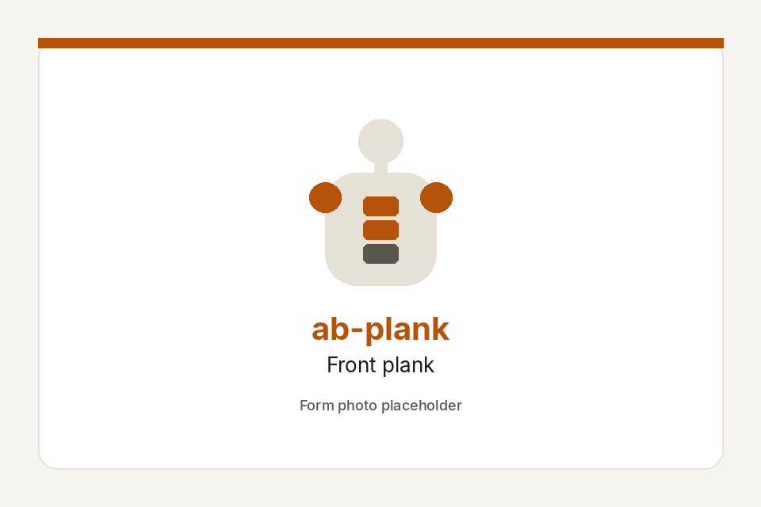
ab-sideplank Side plank
obliquestransverse
glutesshoulders
On one elbow, feet stacked or staggered. Hips high, ribs stacked. Body faces the wall, not the floor. Log clean seconds.
Faults: hips roll or sag. Bottom shoulder shrugged. Top hip collapsed.
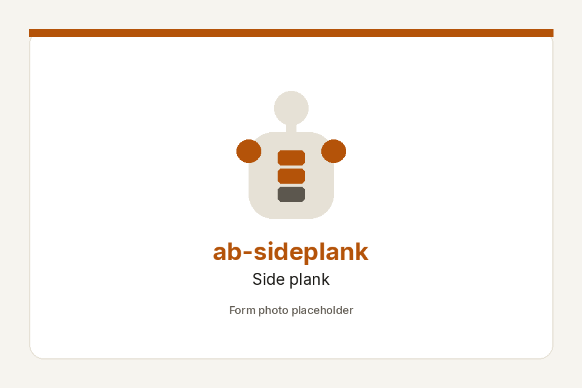
ab-hollow Hollow body hold
mid-abslower-abs
transversehip-flexors
On back, posterior tilt, ribs down. Shoulders and legs hover. Arms by ears, or at the sides if that is too hard. Low back glued.
Faults: low back peels off. Chin jammed. Legs too low too soon.
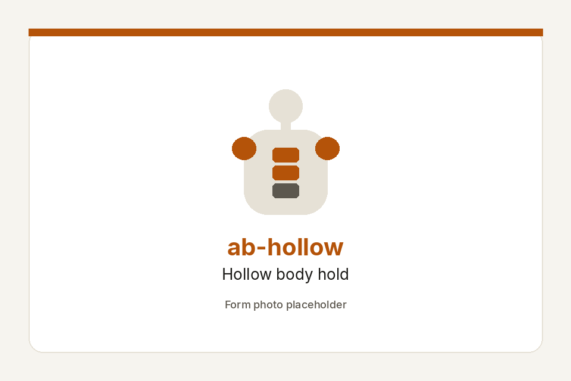
ab-crunch Crunch
upper-absmid-abs
obliques
Curl the ribs toward the pelvis. Eyes on the ceiling. Shoulders just off the floor. Slow down, slow up. Stop before the neck takes over.
Faults: yanking the head. Turning it into a sit-up. Elbows pulling.
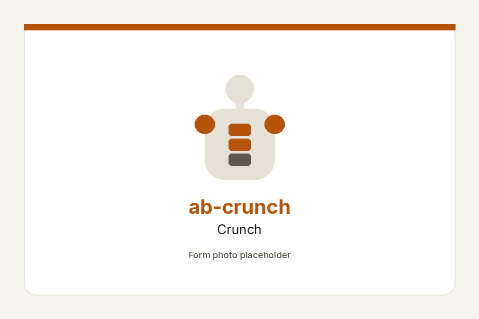
ab-revcrunch Reverse crunch
lower-absmid-abs
hip-flexorstransverse
Hands by the sides. Curl the pelvis toward the ribs. Knees come in because the hips tuck, not because you kick.
Faults: swinging the legs. Pelvis never curls. Momentum.
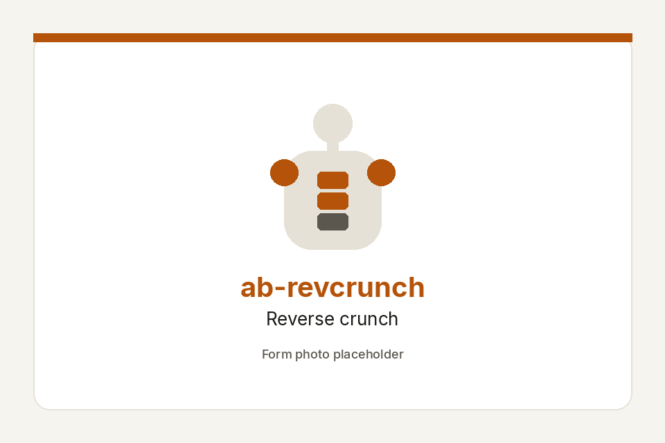
ab-heelslide Heel slides
transverselower-abs
hip-flexorsmid-abs
On back, posterior tilt. Heels on the floor — socks on tile, or a towel. Slide one or both heels out without the back arching, then draw in.
Faults: back arches as the heels go out. Feet leave the floor. Fast slides.
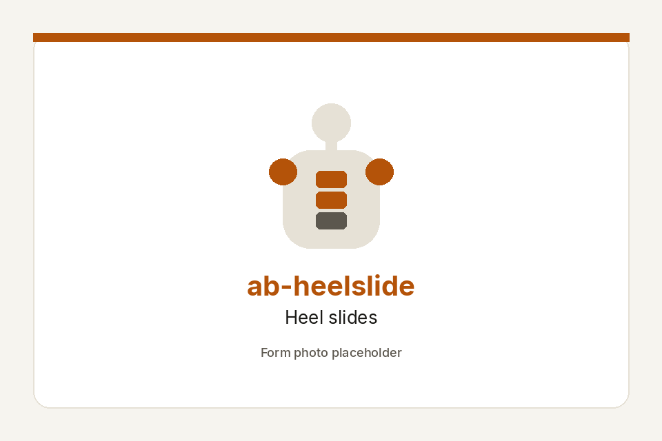
ab-legraise Lying leg raise
lower-absmid-abs
hip-flexorstransverse
On back, posterior tilt. Legs long. Raise and lower without the low back peeling. Stop the set when the tilt is gone.
Faults: low back pops off. Kicking. Cutting the range to hide the arch.
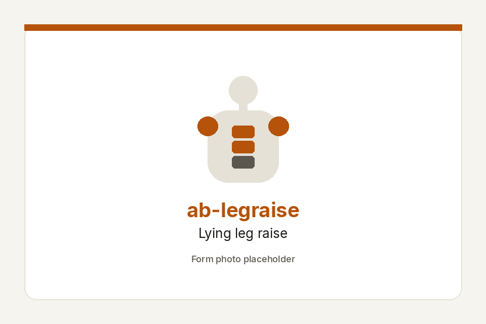
ab-bicycle Bicycle crunch
obliquesmid-abs
upper-abship-flexors
Slow. Opposite elbow toward opposite knee. The work is a rib-to-hip squeeze, not a race. Stop 2–3 reps before form breaks.
Faults: speed. Twisting the neck instead of the ribs. Pulling the head.
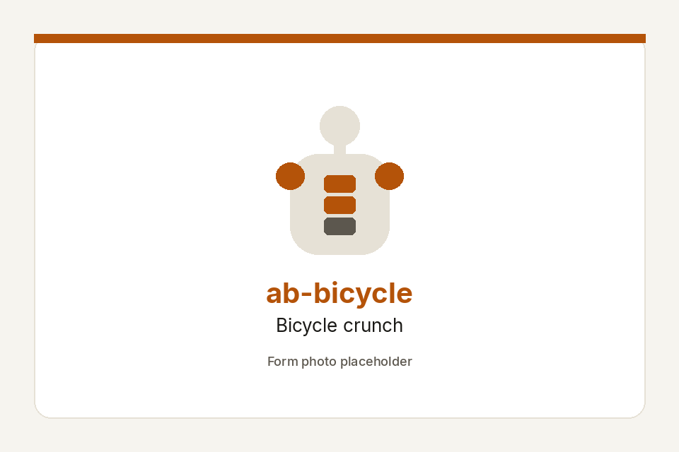
ab-pallof Pallof press
obliquestransverse
mid-absglutes
Band or cable at chest height, stand side-on. Press the arms straight, resist the twist, pause, return. Optional gear — skip if you have no band.
Faults: hips swivel. Arms bending the fight. Band too heavy. Breath locked.
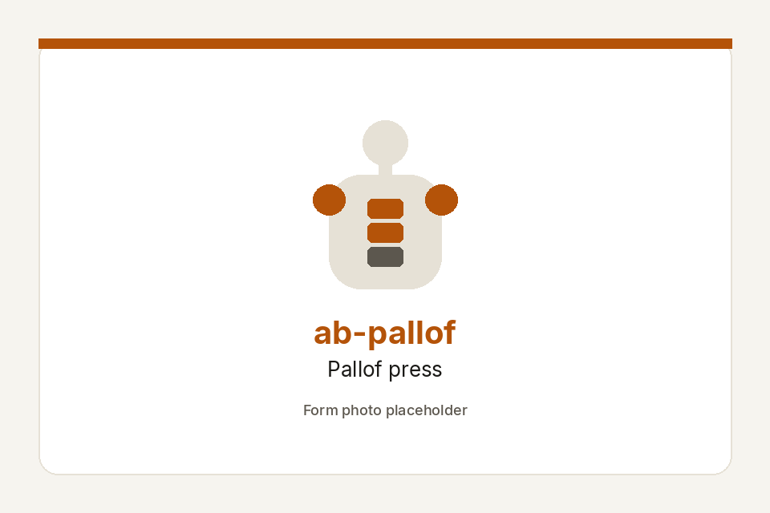
ab-rollout Ab-wheel / ball rollout
transversemid-abs
hip-flexorsshoulders
From the knees. Wheel, stability ball, or a towel on tile. Brace, roll out only as far as the ribs stay down, then pull back. Optional gear.
Faults: low back dumps. Going too far. Hips piking. Shoulders shrugged.
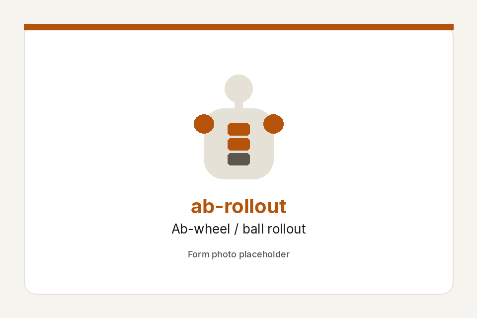
ab-hangknee Hanging knee raise
lower-absmid-abs
hip-flexorsshoulders
Hang from a bar (park or doorway). Slight posterior tilt, raise the knees without a swing. No bar yet: stay on reverse crunch.
Faults: kipping. Shrugging. Knees up but the pelvis never tucks.
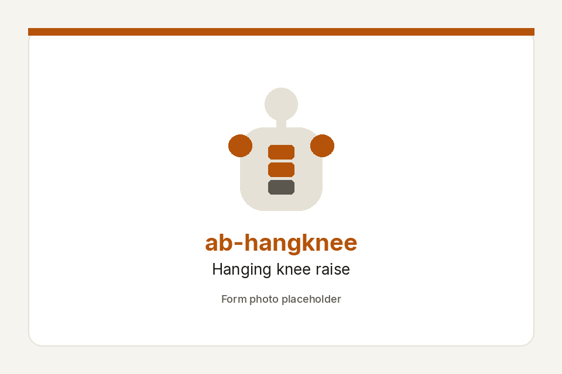
ab-hangleg Hanging straight-leg raise
lower-absmid-abs
hip-flexorsshoulders
Same hang, legs straighter. Tilt first, then lift. Stop when you start to kip. Optional bar — same as ab-hangknee.
Faults: kipping. Bending the knees to cheat. Back arching. Cutting the range.
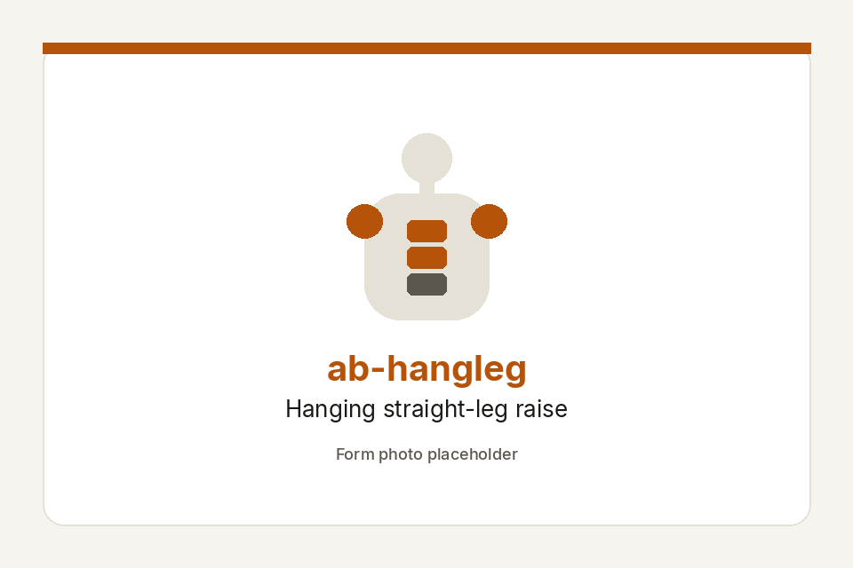